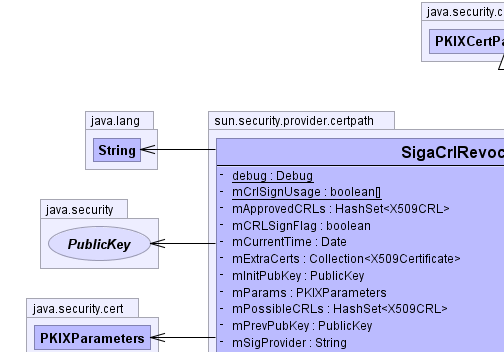
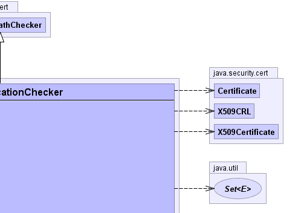
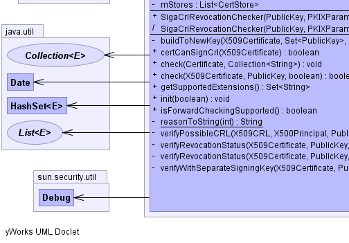
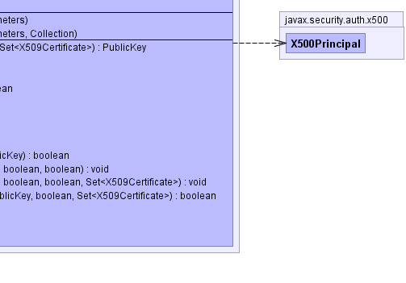

java.security.cert.PKIXCertPathChecker
sun.security.provider.certpath.SigaCrlRevocationChecker
java.security.cert.PKIXCertPathChecker
sun.security.provider.certpath.SigaCrlRevocationChecker
|
|||||||||
| PREV CLASS NEXT CLASS | FRAMES NO FRAMES | ||||||||
| SUMMARY: NESTED | FIELD | CONSTR | METHOD | DETAIL: FIELD | CONSTR | METHOD | ||||||||
java.lang.Object
public class SigaCrlRevocationChecker
CrlRevocationChecker is a PKIXCertPathChecker that checks
revocation status information on a PKIX certificate using CRLs obtained from
one or more CertStores. This is based on revision draft three
of rfc2459
(http://www.ietf.org/internet-drafts/draft-ietf-pkix-new-part1-02.txt).
|  |  |
|  |  |
| Nested Class Summary | |
|---|---|
(package private) static class |
SigaCrlRevocationChecker.RejectKeySelector
|
| Field Summary | |
|---|---|
private static sun.security.util.Debug |
debug
|
private java.util.HashSet<java.security.cert.X509CRL> |
mApprovedCRLs
|
private boolean |
mCRLSignFlag
|
private static boolean[] |
mCrlSignUsage
|
private java.util.Date |
mCurrentTime
|
private java.util.Collection<java.security.cert.X509Certificate> |
mExtraCerts
|
private java.security.PublicKey |
mInitPubKey
|
private java.security.cert.PKIXParameters |
mParams
|
private java.util.HashSet<java.security.cert.X509CRL> |
mPossibleCRLs
|
private java.security.PublicKey |
mPrevPubKey
|
private java.lang.String |
mSigProvider
|
private java.util.List<java.security.cert.CertStore> |
mStores
|
| Constructor Summary | |
|---|---|
SigaCrlRevocationChecker(java.security.PublicKey initPubKey,
java.security.cert.PKIXParameters params)
Creates a CrlRevocationChecker. |
|
SigaCrlRevocationChecker(java.security.PublicKey initPubKey,
java.security.cert.PKIXParameters params,
java.util.Collection certs)
Creates a CrlRevocationChecker, allowing extra
certificates to be supplied beyond those contained in the
PKIXParameters. |
|
| Method Summary | |
|---|---|
private java.security.PublicKey |
buildToNewKey(java.security.cert.X509Certificate currCert,
java.util.Set<java.security.PublicKey> badKeys,
java.util.Set<java.security.cert.X509Certificate> stackedCerts)
Tries to find a CertPath that establishes a key that can be used to verify the revocation status of a given certificate. |
boolean |
certCanSignCrl(java.security.cert.X509Certificate currCert)
Checks that a cert can be used to verify a CRL. |
void |
check(java.security.cert.Certificate cert,
java.util.Collection<java.lang.String> unresolvedCritExts)
Performs the revocation status check on the certificate using its internal state. |
boolean |
check(java.security.cert.X509Certificate currCert,
java.security.PublicKey prevKey,
boolean signFlag)
Performs the revocation status check on the certificate using the provided state variables, as well as the constant internal data. |
java.util.Set<java.lang.String> |
getSupportedExtensions()
|
void |
init(boolean forward)
Initializes the internal state of the checker from parameters specified in the constructor |
boolean |
isForwardCheckingSupported()
|
private static java.lang.String |
reasonToString(int reasonCode)
Return a String describing the reasonCode value |
private boolean |
verifyPossibleCRL(java.security.cert.X509CRL crl,
javax.security.auth.x500.X500Principal certIssuer,
java.security.PublicKey prevKey)
Internal method that accepts a crl from the list of possible_crls, and sees if it is approved, based on the cert. |
private void |
verifyRevocationStatus(java.security.cert.X509Certificate currCert,
java.security.PublicKey prevKey,
boolean signFlag,
boolean allowSeparateKey)
Internal method to start the verification of a cert |
private void |
verifyRevocationStatus(java.security.cert.X509Certificate currCert,
java.security.PublicKey prevKey,
boolean signFlag,
boolean allowSeparateKey,
java.util.Set<java.security.cert.X509Certificate> stackedCerts)
Internal method to start the verification of a cert |
private boolean |
verifyWithSeparateSigningKey(java.security.cert.X509Certificate currCert,
java.security.PublicKey prevKey,
boolean signFlag,
java.util.Set<java.security.cert.X509Certificate> stackedCerts)
We have a cert whose revocation status couldn't be verified by a CRL issued by the cert that issued the CRL. |
| Methods inherited from class java.security.cert.PKIXCertPathChecker |
|---|
clone |
| Methods inherited from class java.lang.Object |
|---|
equals, finalize, getClass, hashCode, notify, notifyAll, toString, wait, wait, wait |
| Field Detail |
|---|
private static final sun.security.util.Debug debug
private final java.security.PublicKey mInitPubKey
private final java.util.List<java.security.cert.CertStore> mStores
private final java.lang.String mSigProvider
private final java.util.Date mCurrentTime
private java.security.PublicKey mPrevPubKey
private boolean mCRLSignFlag
private java.util.HashSet<java.security.cert.X509CRL> mPossibleCRLs
private java.util.HashSet<java.security.cert.X509CRL> mApprovedCRLs
private final java.security.cert.PKIXParameters mParams
private final java.util.Collection<java.security.cert.X509Certificate> mExtraCerts
private static final boolean[] mCrlSignUsage
| Constructor Detail |
|---|
public SigaCrlRevocationChecker(java.security.PublicKey initPubKey,
java.security.cert.PKIXParameters params)
throws java.security.cert.CertPathValidatorException
CrlRevocationChecker.
initPubKey - initial PublicKey in the pathparams - PKIXParameters to be used for finding
certificates and CRLs, etc.
java.security.cert.CertPathValidatorException
SigaCrlRevocationChecker(java.security.PublicKey initPubKey,
java.security.cert.PKIXParameters params,
java.util.Collection certs)
throws java.security.cert.CertPathValidatorException
CrlRevocationChecker, allowing extra
certificates to be supplied beyond those contained in the
PKIXParameters.
initPubKey - initial PublicKey in the pathparams - PKIXParameters to be used for finding
certificates and CRLs, etc.certs - a Collection of certificates that may be
useful, beyond those available through params (null
if none)
java.security.cert.CertPathValidatorException| Method Detail |
|---|
public void init(boolean forward)
throws java.security.cert.CertPathValidatorException
init in class java.security.cert.PKIXCertPathCheckerjava.security.cert.CertPathValidatorExceptionpublic boolean isForwardCheckingSupported()
isForwardCheckingSupported in class java.security.cert.PKIXCertPathCheckerpublic java.util.Set<java.lang.String> getSupportedExtensions()
getSupportedExtensions in class java.security.cert.PKIXCertPathChecker
public void check(java.security.cert.Certificate cert,
java.util.Collection<java.lang.String> unresolvedCritExts)
throws java.security.cert.CertPathValidatorException
check in class java.security.cert.PKIXCertPathCheckercert - the CertificateunresolvedCritExts - a Collection of the unresolved critical extensions
java.security.cert.CertPathValidatorException - Exception thrown if certificate does not verify
public boolean check(java.security.cert.X509Certificate currCert,
java.security.PublicKey prevKey,
boolean signFlag)
throws java.security.cert.CertPathValidatorException
currCert - the CertificateprevKey - the previous PublicKey in the chainsignFlag - a boolean as returned from the last call, or true if this is
the first cert in the chain
java.security.cert.CertPathValidatorException - Exception thrown if certificate does not verify.public boolean certCanSignCrl(java.security.cert.X509Certificate currCert)
currCert - an X509Certificate to check
private void verifyRevocationStatus(java.security.cert.X509Certificate currCert,
java.security.PublicKey prevKey,
boolean signFlag,
boolean allowSeparateKey)
throws java.security.cert.CertPathValidatorException
java.security.cert.CertPathValidatorException
private void verifyRevocationStatus(java.security.cert.X509Certificate currCert,
java.security.PublicKey prevKey,
boolean signFlag,
boolean allowSeparateKey,
java.util.Set<java.security.cert.X509Certificate> stackedCerts)
throws java.security.cert.CertPathValidatorException
stackedCerts - a Set of X509Certificates>
whose revocation status depends on the non-revoked status of
this cert. To avoid circular dependencies, we assume they're
revoked while checking the revocation status of this cert.
java.security.cert.CertPathValidatorException
private boolean verifyWithSeparateSigningKey(java.security.cert.X509Certificate currCert,
java.security.PublicKey prevKey,
boolean signFlag,
java.util.Set<java.security.cert.X509Certificate> stackedCerts)
Note that this does not provide support for indirect CRLs, only CRLs signed with a different key (but the same issuer name) as the certificate being checked.
currCert - the X509Certificate to be checkedprevKey - the PublicKey that failedsignFlag - true if that key was trusted to sign CRLsstackedCerts - a Set of X509Certificates>
whose revocation status depends on the non-revoked status of
this cert. To avoid circular dependencies, we assume they're
revoked while checking the revocation status of this cert.
true if the cert's revocation status was verified
successfully, false otherwise
private java.security.PublicKey buildToNewKey(java.security.cert.X509Certificate currCert,
java.util.Set<java.security.PublicKey> badKeys,
java.util.Set<java.security.cert.X509Certificate> stackedCerts)
throws java.security.cert.CertPathBuilderException
currCert - the X509Certificate to be checkedbadKeys - a Set of PublicKeys that should
be ignoredstackedCerts - a Set of X509Certificates>
whose revocation status depends on the establishment of this
path.
java.security.cert.CertPathBuilderException - on failureprivate static java.lang.String reasonToString(int reasonCode)
private boolean verifyPossibleCRL(java.security.cert.X509CRL crl,
javax.security.auth.x500.X500Principal certIssuer,
java.security.PublicKey prevKey)
throws java.security.cert.CertPathValidatorException
crl - a possible CRL to test for acceptabilitycertIssuer - the issuer DN of the certificate whose revocation status is
being checkedprevKey - the public key of the issuer of cert
java.security.cert.CertPathValidatorException
|
|||||||||
| PREV CLASS NEXT CLASS | FRAMES NO FRAMES | ||||||||
| SUMMARY: NESTED | FIELD | CONSTR | METHOD | DETAIL: FIELD | CONSTR | METHOD | ||||||||